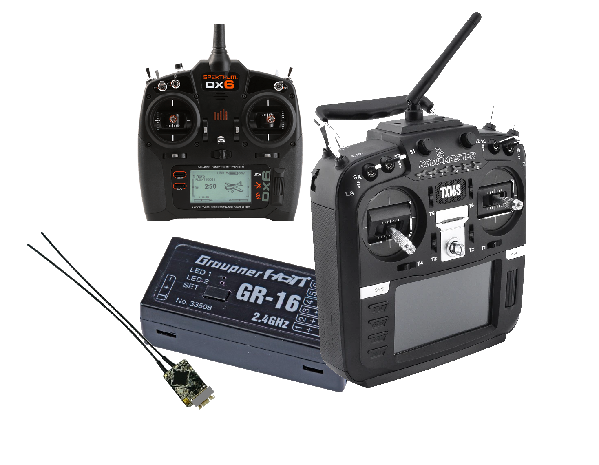
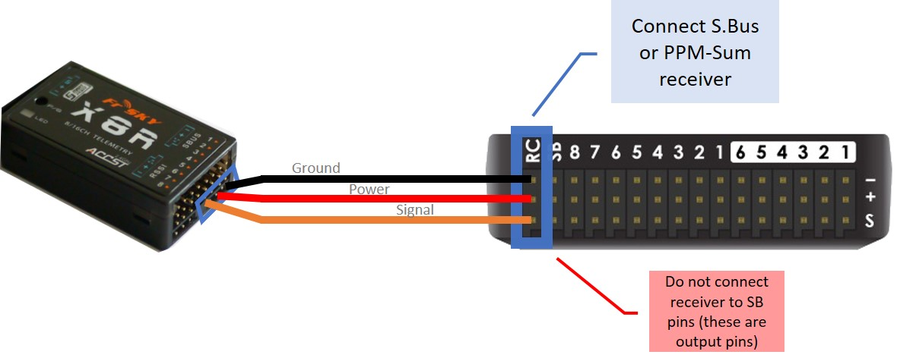

Radio Control Systems¶
This article provides an overview of the RC Transmitter and Receiver Systems that can be used with ArduPilot autopilots.
Compatible RC Protocols¶
ArduPilot autopilots are compatible with the following receiver output protocols:
PPM-Sum receivers
SBus receivers
IBUS receivers
CRSF receivers (including ExpressLRS systems)
Parallel PWM outputs encoded to PPM-Sum using an external encoder (see below)
Connecting the Receiver¶
For all protocols above, ArduPilot auto-detects the protocol of the RC receiver system. However, depending on the protocol and autopilot type, the physical connection to the autopilot may differ.
Some protocols, most noticeably SRXL2, CRSF, and ELRS, require a full UART connection.
In addition other protocols that also provide telemetry, like FPort, would generally require a bi-directional half-duplex connection in order to obtain telemetry. For these protocols the TX output of the UART should be connected to the serial input of the receiver. It is also possible on F7 and H7 boards to connect to the UART RX input with some additional configuration.
PPM-Sum/SBus/IBus¶
These receivers are usually connected to the RCin or SBUS input pin on the autopilot.
To connect a PPM-Sum receiver or an SBus receiver to a Pixhawk, for example, plug the ground (black), power (red) and signal (usually white - orange in the diagram below) wires to the RC pins on the Pixhawk.
{kind=link}
Tip
The parameter to enable the SBus output from the PixHawk style autopilots is BRD_SBUS_OUT. This is only to pass SBus externally to other devices, like servos. Not to connect a receiver to RCin or SBus In.
DSM/DSM2/DSM-X/SRXL/SUM-D¶
For autopilots that do not provide a separate DSM input, these can be connected as above. However, for performance reasons on autopilots that use an IOMCU (The Pixhawk/Cube family), the autopilot’s DSM input connection is highly recommended.
FPort/FPort2¶
FPort is a bi-directional protocol, using SBus RC in one direction, and serial telemetry in the other. The RC portion can be decoded when attached to an autopilot as if it were SBus, but the embedded telemetry would be lost. See the FPort setup documentation for details on connection to one of the autopilots Serial Ports.
SRXL2/CRSF/ELRS¶
These bi-directional protocols require the use of a Serial Port. See links below for setup and connections.
RC input to Serial Port¶
Note
ArduPilot firmware releases 4.0 and later, any UART RX input will auto-detect all the protocols (except PPM or SRXL2/CRSF/ELRS which also require connection of the UART’s TX pin), if the serial port protocol is set to 23 (for example SERIAL2_PROTOCOL for the TELEM2 UART is used).
Note
The serial port baudrate is automatically set and controlled by the firmware when any serial RC protocol is detected.
Radio System Selection¶
Selection will depend on many factors: range,telemetry requirements, cost, compatibility with existing equipment, etc. Most manufacturers often many different models with differing capabilities. Many systems have been reverse-engineered and “cloned” by other manufacturers offering more economical versions of transmitters and receivers. Many Transmitters offer multiple protocols and are based on the OpenTX firmware which is extremely flexible and also allows the use of LUA scripts to display telemetry data on their LCD screens.
Range¶
RC control range varies greatly depending on system used, installation, antennas used, terrain, and even weather conditions. But in general, for discussion purposes here, RC systems can be categorized into Short Range (2km and under) , Medium (2-10km) and Long Range (>10km). In addition, they may offer uni-directional (Vehicle to Transmitter) or bi-directional (Vehicle to/from Transmitter) telemetry.
Telemetry¶
FrSky Horus Transmitter running Yaapu LUA script

Some systems provide transparent radio modems to the telemetry from the autopilot, and others have proprietary protocols. Those with proprietary protocols often have means of displaying telemetry data on the transmitter display itself, like FRSky or other OpenTX based Transmitters.
Telemetry speeds vary from 56K to 1-2K baud depending on protocol and, in some cases, distance. Often telemetry range will be less than radio control range.
Number of channels¶
ArduPilot requires at least 5 channels for most vehicles, however, 8 to 16 channels are commonly available in most systems and are very convenient for controlling other vehicle functions such as cameras or flight feature options. Many vehicles require 8 channels just for basic operation, such as many QuadPlanes.
Below is a table with some commonly available systems showing these elements. Note, not all versions of transmitters and/or receivers from a particular manufacturer may have these characteristics. Note: that many “clone” or “compatible” versions of this systems also exist, only the OEM system is listed.
Original Manufacturer |
Range |
Telemetry |
Telem Speed |
TX Display |
RC Protocol |
Notes |
|---|---|---|---|---|---|---|
DragonLink |
Long |
Bi-dir |
56K |
via MTP/LUA |
PPM_SUM/SBUS |
1 |
CRSF |
Long |
Bi-Dir |
Variable |
via LUA |
SBUS/CRSF |
3 |
ELRS |
Long |
Limited |
CRSF |
4 |
||
FLYSKY |
Short |
No |
IBus |
|||
FrSky X series |
Short |
Bi-dir |
Medium |
yes |
PPM-SUM/SBUS/ FPort |
2 |
FrSky R9 series |
Medium |
Bi-dir |
Medium |
yes |
PPM-SUM/SBUS/ FPort |
2 |
Futaba |
Short |
No |
SBus |
|||
Graupner |
Short |
Yes |
Medium |
yes |
SUM-D |
|
Multiplex |
Short |
No |
SRXL |
|||
Spektrum |
Short |
No |
DSM/DSM2 DSM-X/ SRXL |
Note 1: DragonLink provides a 56Kbaud transparent link for telemetry, allowing full MAVLink telemetry to/from the vehicle from the transmitter module. Dragonlink is an add-on module to the transmitter, such as an FRSky Taranis or RadioMaster T16. See [copywiki destination=”plane,copter,rover,blimp”]. MTP (Mavlink to Passthru) converters are available to allow direct display of MAVLink Telemetry data on OpenTX transmitters using Yaapu Telemetry LUA Script.
Note 2: See [copywiki destination=”plane,copter,rover,blimp”]. Future firmware versions will offer the ability to change parameters over FRSky telemetry from an Open TX compatible transmitter in addition to displaying the telemetry data. Most FRSky compatible transmitters use OpenTX. Note that R9 systems are not quite Long Range, but much further range than normal FRSky systems, themselves at the very high end of the Short Range category at 1.6-2km range.
Note 3: ArduPilot provides a means to send its telemetry data via CRSF such that it can be displayed on OpenTX transmitters using the Yaapu Telemetry LUA Script.
Note 4: ELRS (EpressLRS) is a system that uses the CRSF (TBS Crossfire) RC protocol with several minimizations to simplify the system. It has reduced features but it connects to ArduPilot just like CRSF, when CRSF RXs are attached using a full UART, instead of SBUS protocol to communicate to ArduPilot. See ExpressLRS site <https://www.expresslrs.org/2.0/> for more information.
Links to Radio Control Systems¶
Without integrated telemetry:
With integrated telemetry:
- [copywiki destination=”plane,copter,rover,blimp”]
- DragonLink RC Systems
- [copywiki destination=”plane,copter,rover,blimp”]
- FRSky RC Systems
- [copywiki destination=”plane,copter,rover,blimp”]
- Graupner RC Systems
- [copywiki destination=”plane,copter,rover,blimp”]
- Multiplex RC System
- [copywiki destination=”plane,copter,rover,blimp”]
- Spektrum RC Systems
- Spektrum Satellite Receivers
- Spektrum SRXL2 Receivers
- [copywiki destination=”plane,copter,rover,blimp”]
- Team Black Sheep RC Systems
- CRSF Receivers
- ELRS Receivers
- CRSF Video Transmitters
Multi-Protocol:
Recommendations:¶
Its difficult to make a recommendations since there is such a wide spectrum of capabilities, features, and costs.
In Europe, Multiplex and Graupner are well established systems and comply with EU radiation recommendations (as do many other brands as an option).
FLYSKY produces very low cost, low end systems.
FRSky and Spektrum enjoy the largest established bases with Spektrum dominant in park flyer and entry level RC systems. FRSky has telemetry capabilities and utilizes OpenTX which is very flexible and is continually adding features in the firmware.
The Jumper T16 and RadioMaster T16 are FRSky Horus-like OpenTX based transmitter clones with multiple RC protocols built-in.
PPM encoders¶
A PPM Encoder will allow you to use any older style RC receiver that has only PWM outputs for each channel instead of an SBUS or PPM output. See PPM encoders for more information.
[copywiki destination=”plane,copter,rover,blimp”]